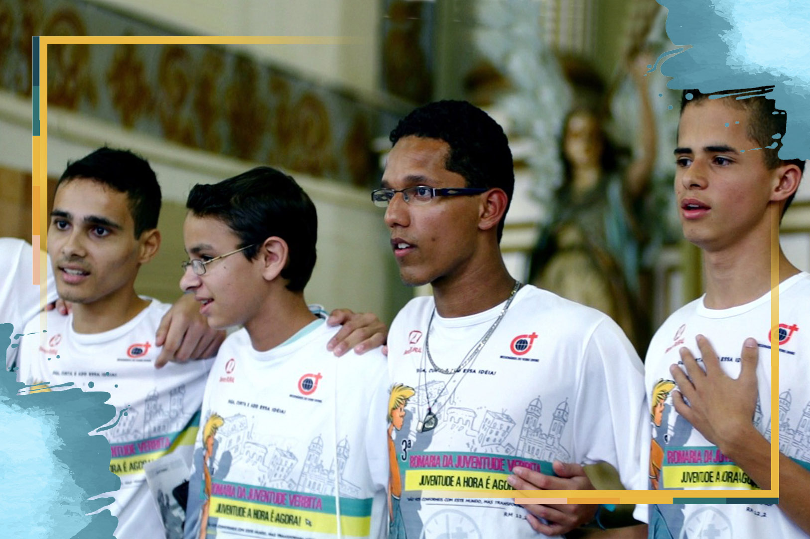

Oracoes Missionarias
A vida missionária da juventude
26 de Outubro de 2020

Oração inicial
Espírito Santo, sopro de vida, que fazes novas todas as coisas, abre nossos corações às tuas inspirações para que, ao escutar e aprofundar tua Palavra, aumente em nós o ardor missionário e o cuidado com a Casa Comum, nossa terra, e o amor a todas as tuas criaturas, sobretudo cada pessoa criada à tua imagem e semelhança. Espírito de Sabedoria, guia nossos passos nos caminhos da missão. Amém.Reflexão
A vida dos jovens é repleta de descobertas, experimentos e sonhos, mas também cheia de desafios. No Brasil, cerca de um quarto da população é jovem, mas muitos não têm acesso à educação e ao trabalho, são vítimas da violência e da marginalização.A Juventude Missionária (JM) é um serviço de animação e formação missionária ligada à Pontifícia Obra da Propagação da Fé. Busca animar o espírito missionário e profético nas juventudes, testemunhar a misericórdia de Jesus Cristo e se deixar guiar pelo Mestre de Nazaré.
Há 15 anos, a JM cria pequenos grupos de jovens que aprofundam a leitura orante da Bíblia, buscam despertar o espírito missionário em suas paróquias, dioceses e demais espaços da juventude, e tem como ponto culminante a Experiência de Missão Sem Fronteiras com jovens do Brasil inteiro. Este ano foi em Planaltina, DF, junto com o 1º Congresso Missionário Nacional.
Palavra de Deus: Lc 10, 25-37
Certa ocasião, um perito na lei levantou-se para pôr Jesus à prova e lhe perguntou: "Mestre, o que preciso fazer para herdar a vida eterna? " "O que está escrito na Lei? ", respondeu Jesus. "Como você a lê? " Ele respondeu: " ‘Ame o Senhor, o seu Deus de todo o seu coração, de toda a sua alma, de todas as suas forças e de todo o seu entendimento’ e ‘Ame o seu próximo como a si mesmo’". Disse Jesus: "Você respondeu corretamente. Faça isso, e viverá". Mas ele, querendo justificar-se, perguntou a Jesus: "E quem é o meu próximo? " Em resposta, disse Jesus: "Um homem descia de Jerusalém para Jericó, quando caiu nas mãos de assaltantes. Estes lhe tiraram as roupas, espancaram-no e se foram, deixando-o quase morto. Aconteceu estar descendo pela mesma estrada um sacerdote. Quando viu o homem, passou pelo outro lado. E assim também um levita; quando chegou ao lugar e o viu, passou pelo outro lado. Mas um samaritano, estando de viagem, chegou onde se encontrava o homem e, quando o viu, teve piedade dele. Aproximou-se, enfaixou-lhe as feridas, derramando nelas vinho e óleo. Depois colocou-o sobre o seu próprio animal, levou-o para uma hospedaria e cuidou dele. No dia seguinte, deu dois denários ao hospedeiro e disse-lhe: ‘Cuide dele. Quando voltar lhe pagarei todas as despesas que você tiver’. "Qual destes três você acha que foi o próximo do homem que caiu nas mãos dos assaltantes? " "Aquele que teve misericórdia dele", respondeu o perito na lei. Jesus lhe disse: "Vá e faça o mesmo".Para meditar
No tempo de Jesus, os samaritanos eram mal vistos e considerados infiéis, mas nesta parábola, foi o único que sentiu compaixão e cuidou do homem ferido e abandonado na beira da estrada, enquanto que os especialistas da religião e da lei não fizeram nada. Sou capaz de agir como o samaritano diante do meu próximo que enfrenta dificuldades?
Oração do Mês Missionário
Deus Pai, Filho e Espírito Santo, fonte transbordante da missão, ajuda-nos a compreender que a vida é missão, dom e compromisso. Que Maria, nossa intercessora na cidade, no campo, na Amazônia e em toda parte, ajude cada um de nós a ser testemunhas proféticas do Evangelho, numa Igreja sinodal e em estado permanente de missão. Eis-me aqui, Senhor, envia-me! Amém.
Assista ao vídeo
O testemunho missionário de inúmeros jovens espalhados pelo Brasil nos anima com sua alegria, saída corajosa e esperança.Para rezar a novena completa com a sua família, comunidade ou grupos on-line, baixe o livrinho:
Novena Missionária 2020
Destaques
Província Stella Matutina
Rua São Benedito, 2146 - Santo Amaro - São Paulo - SP |
Tel. (11)
5547-7222


Província Spiritus Divinae Sapientiae
Rua Arnaldo Janssen, 320 - Cara-Cara - Ponta Grossa - PR
|
Tel. (42) 3326 4091